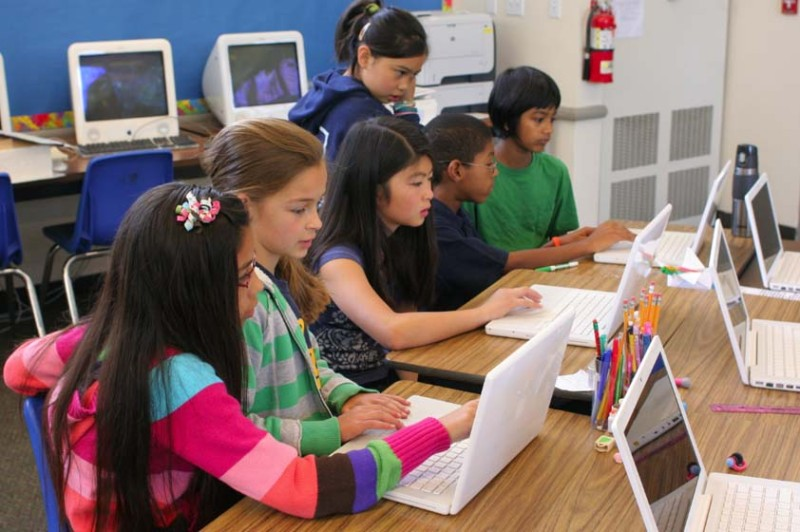

Our Story
Based in Philadelphia and started in 2014 by a group of recently graduated graphic design students, After School Design set out to bring a quickly growing side of the art world to classrooms in low-income areas. As an after-school program, we visit schools across the Philadelphia area to bring learning and artistic fun to students grades 6-12. Beyond honing technical skills, the club fosters collaboration and a sense of community as kids share ideas and collaborate on exciting projects. As pixels come to life on screens, so do the imaginations of our budding designers, making every session a canvas for boundless inspiration and creative growth.
